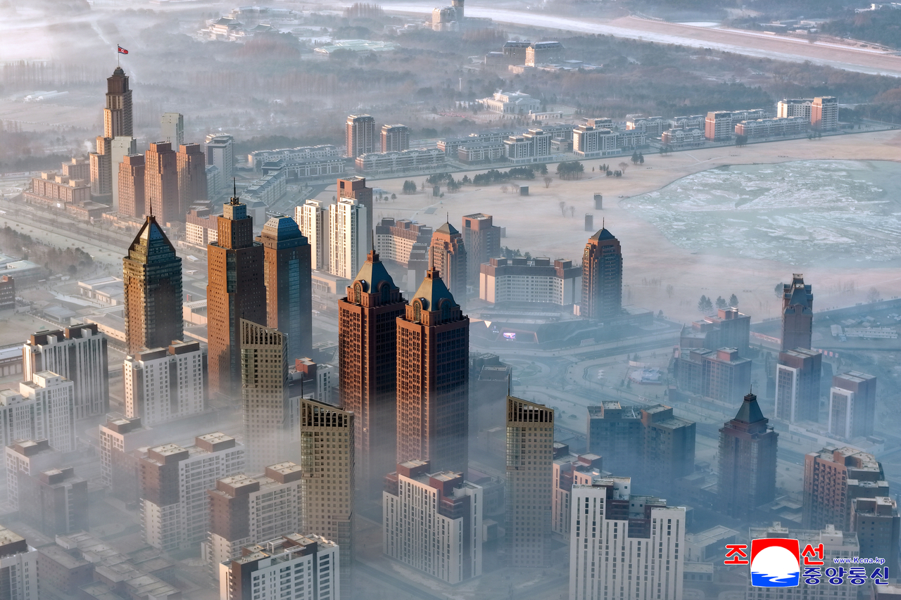
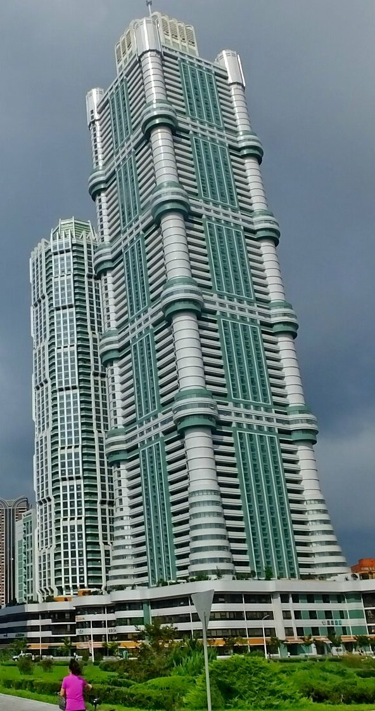
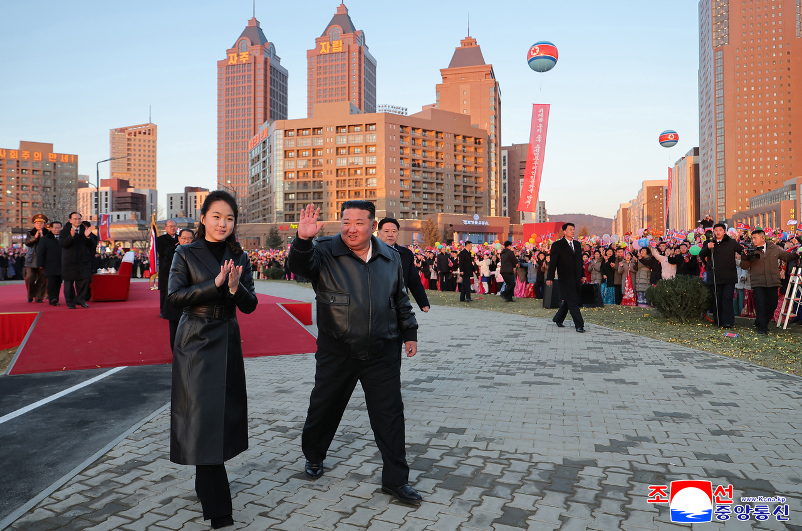
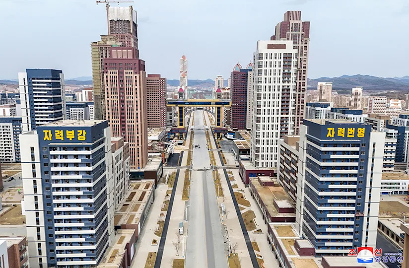
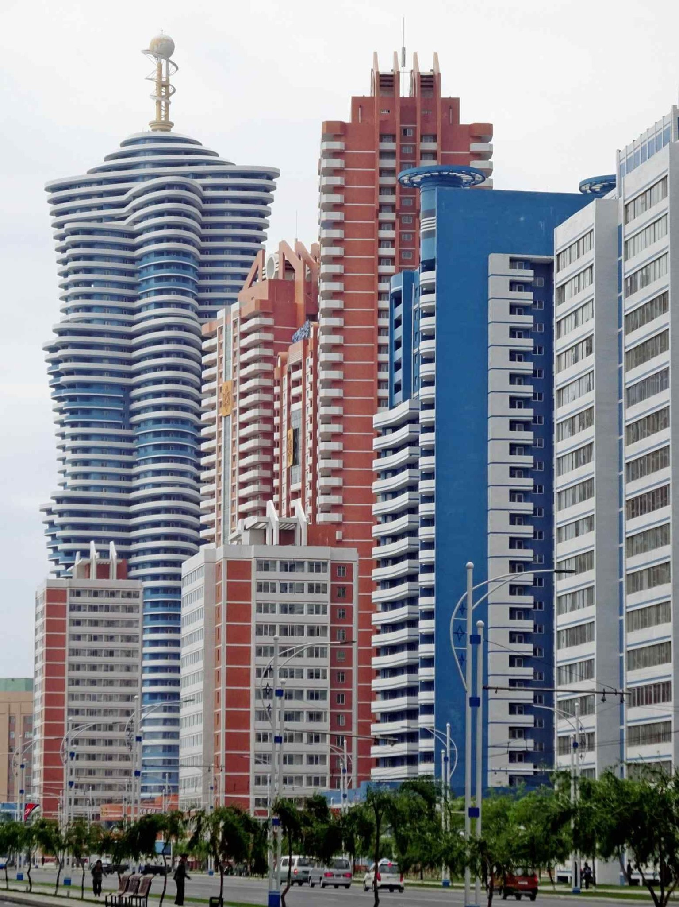
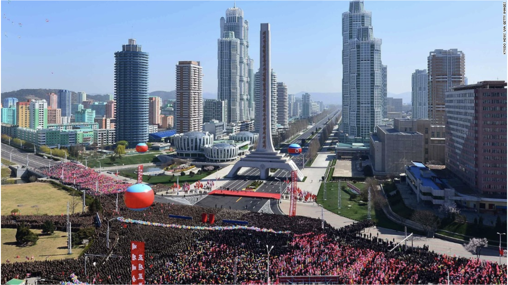
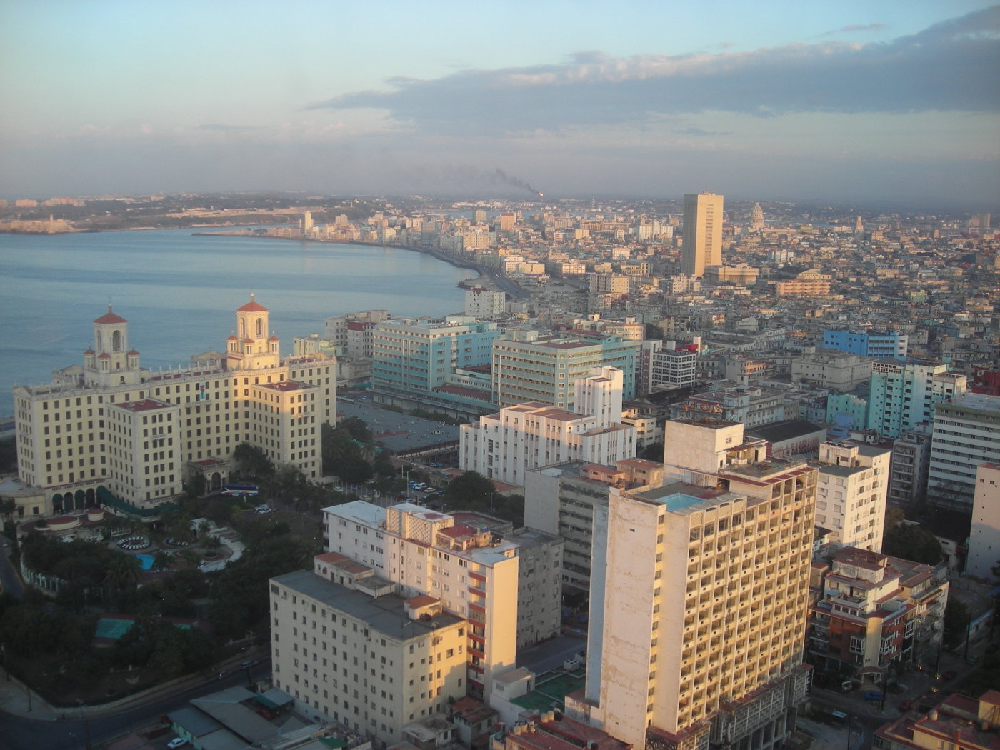
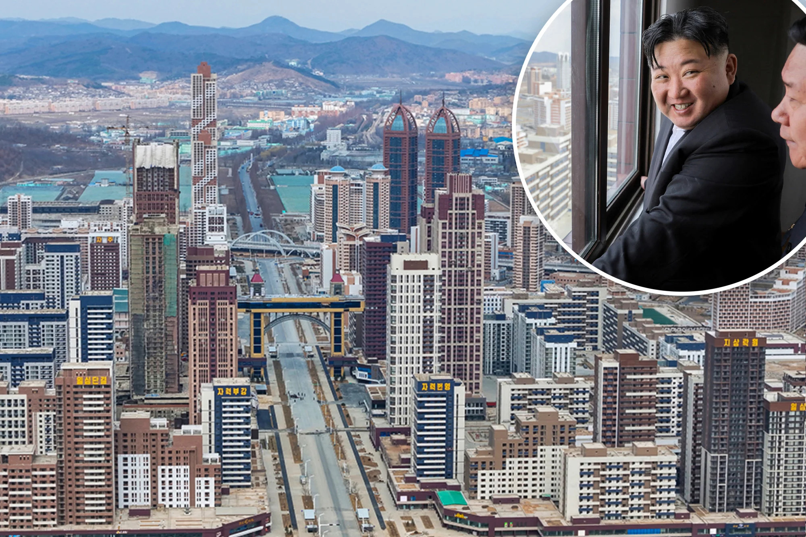
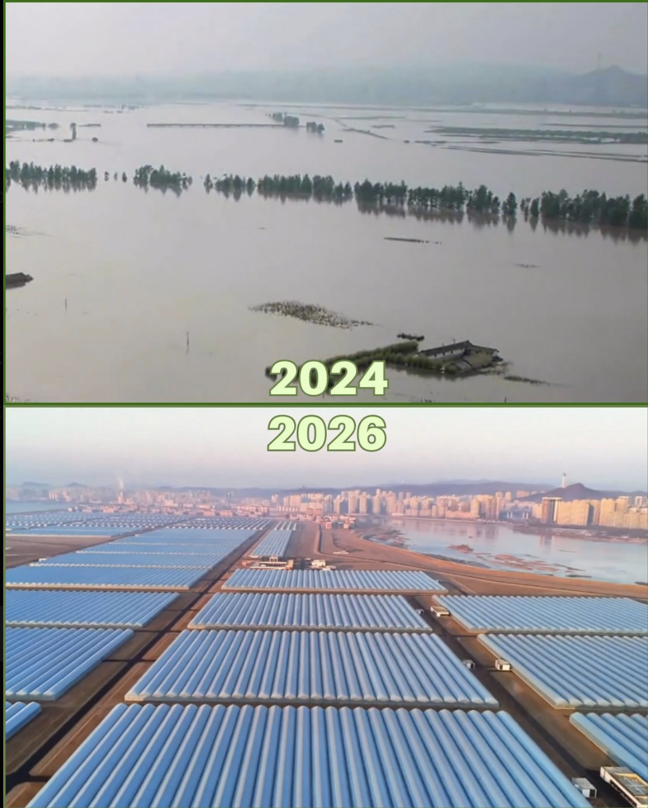

Poor does not mean powerless.
New towers. A strategic partnership with Russia. Regional factories, shops and even traffic jams. North Korea is changing in ways that GDP alone cannot explain.

The building has not stopped.
North Korea announced the completion of 50,000 Pyongyang apartments in February 2026, concluding a five-year construction program. Yonhap's report.
The Bank of Korea estimated North Korean economic growth at 3.5% in 2025, after 3.1% in 2023 and 3.7% in 2024. Bank of Korea's July 2026 estimates.
Construction and output growth do not establish better living conditions.
Russia brings concrete benefits.
The June 2024 Comprehensive Strategic Partnership treaty formalized a relationship with concrete exchanges. North Korea supplies arms and troops for Russia’s war against Ukraine. Pyongyang gains resources and support in return.
- Fuel & finance
- Oil shipments and access to Russian banking help North Korea obtain resources and move money. These are practical benefits under sanctions. Open Source Centre’s oil investigation · U.S. Treasury on banking links.
- Military capability
- The Multilateral Sanctions Monitoring Team reports Russian air-defense and electronic-warfare systems, troop training, and missile-performance feedback. Combat also gives North Korean troops experience in modern warfare, at the cost of casualties. May 2025 monitoring report · April 2026 U.S. Indo-Pacific Command testimony.
- Diplomatic protection
- Russia’s March 2024 veto ended the UN expert panel that monitored North Korean sanctions. The sanctions themselves remain in force; Moscow’s veto removed an important source of scrutiny. UN Security Council record.
- A new cargo route
- Russia’s transport ministry announced the opening of the new cross-border road bridge on September 7, 2026, initially for cargo. Passenger facilities were still unfinished. The connection adds a direct road route alongside the existing railway. Russian Ministry of Transport announcement (Russian).
The partnership gives North Korea more resources, military knowledge and room to act internationally.
20×10: development beyond the capital.
The name is Regional Development 20×10 Policy: modern facilities in 20 cities and counties each year for ten years. Launched in January 2024, it began with factories for food, clothing and everyday household goods. KCNA’s policy account.
2024 · First 20
The first round’s factories opened from December 2024 through February 2025. Satellite analysis documented construction at the new production sites.
38 North’s first-year review →2025 · Another 20
The second round opened before year-end. Selected locations also received hospitals and leisure complexes.
38 North’s second-year review →2026 · Work expands
Another 20 regions began construction in early 2026. The program now includes healthcare and leisure facilities alongside factories.
38 North’s 2026 briefing, pp. 19–20 →A concrete example: Jongphyong’s new service complex includes a cinema, swimming pool, library, shops and a restaurant. These changes extend beyond Pyongyang’s skyline. December 2025 opening and photographs.
Keeping these facilities operating requires dependable power, materials and staff. 38 North’s September 2026 assessment.
Shopping, leisure—and traffic.
More cars, traffic jams and crowded parking are part of Pyongyang’s changing streets. This Reuters video makes the change visible.
See what a Chinese exchange student filmed.
Bilibili creator 偷吃一口口面包, who identifies as a Chinese exchange student, shares visits to Pyongyang’s shops and leisure spaces.
Hear a different student’s account: Yu Youlin (于又霖) discusses electronic payments, taxi apps, cafés and shopping during a May–December 2025 exchange. Chinese audio interview, December 28, 2025.
These capital-city and foreign-student views are selected observations. Upload dates are not necessarily filming dates. Bilibili may require sign-in after the preview.
Pyongyang up close: the construction photographs
These photographs establish visible buildings and ceremonies. They do not show maintenance, occupancy, allocation, or conditions outside the capital.
The apartment total is a North Korean state announcement, reported by Yonhap. It is evidence of the government's claims and priorities; it is not an independent assessment of housing quality or access.
The Bank of Korea uses South Korean prices and value-added ratios to estimate North Korean output. Its figures describe estimated production trends and cannot be used directly for international per-capita income or welfare comparisons.







Havana, Dhaka, Pyongyang: what the images can compare
The original preparation placed three capital-city photographs beside national GDP-per-capita estimates. Country averages are not city incomes, and photographs are not comparable economic samples. The images remain useful for comparing architecture and urban form.



Different photographers, locations, and dates shape these views. They cannot rank the wealth or well-being of the three cities.
Beyond the capital: flood recovery and remaining questions

The original argument also considered rural housing and greenhouse construction. Those projects matter to the question of state capacity beyond Pyongyang. Its annual rural-house totals, currency depreciation estimate, and statements about doubled food and fuel prices need dated sources before they can support a current assessment.
North Korea announced another stage of the Pyongyang housing project beginning on February 18, 2026. Continued construction adds to the question; it does not settle how resources are distributed. Yonhap's report.
GDP measures aggregate production. To understand North Korea, also ask what the state can mobilize, who receives those resources, and what daily life costs.